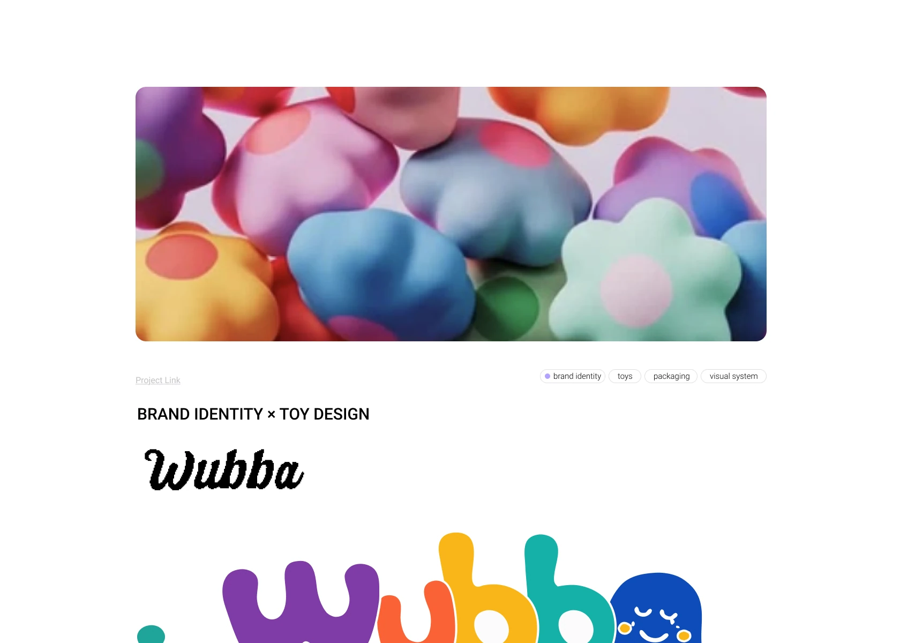
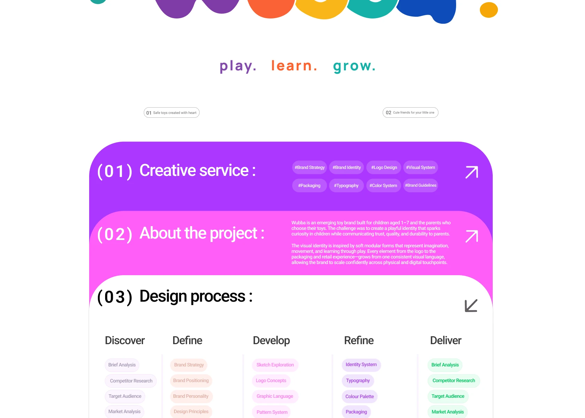
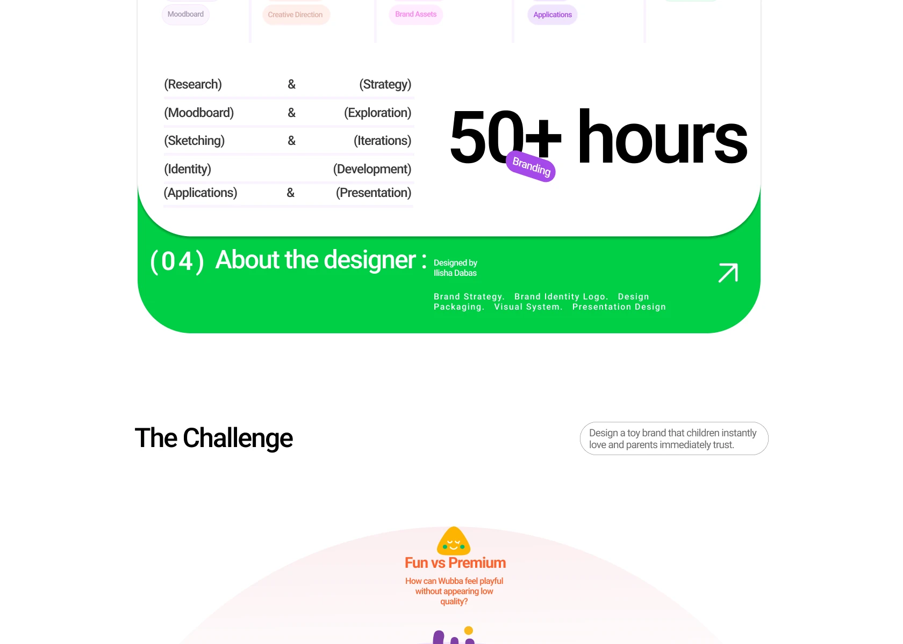
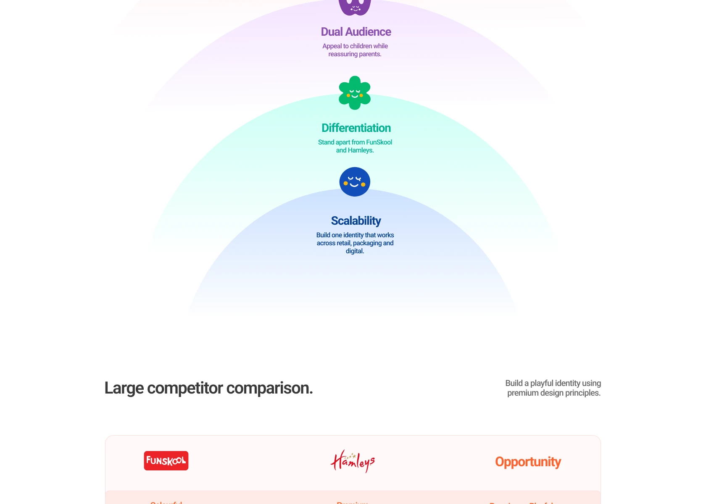
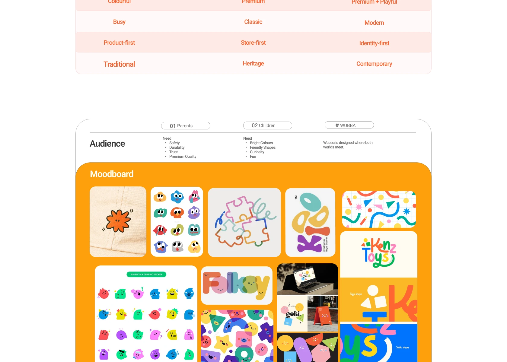
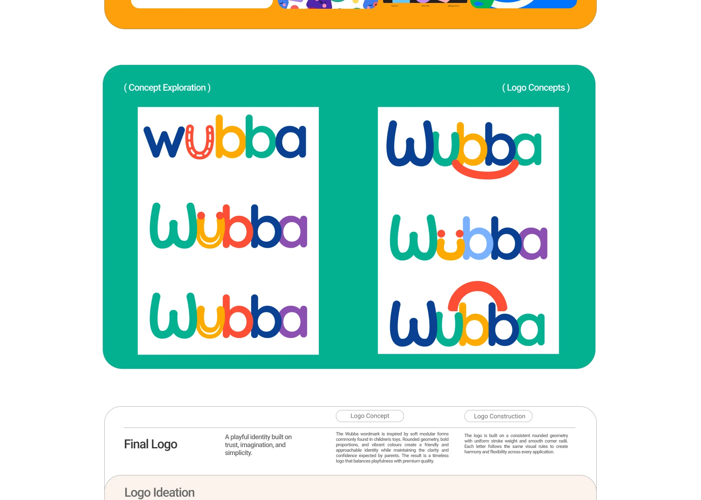
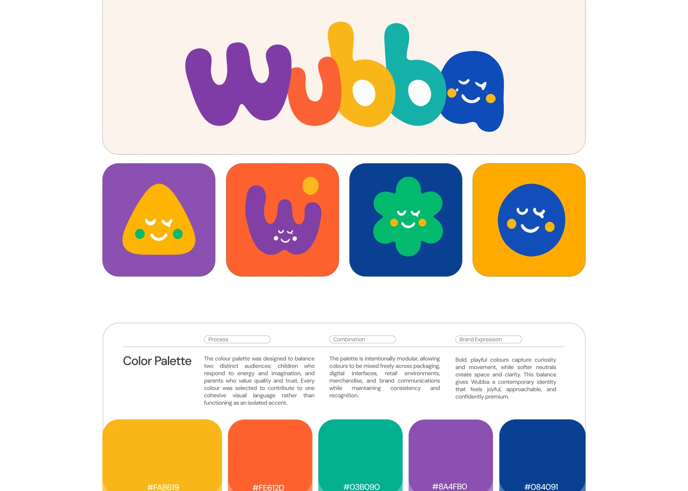
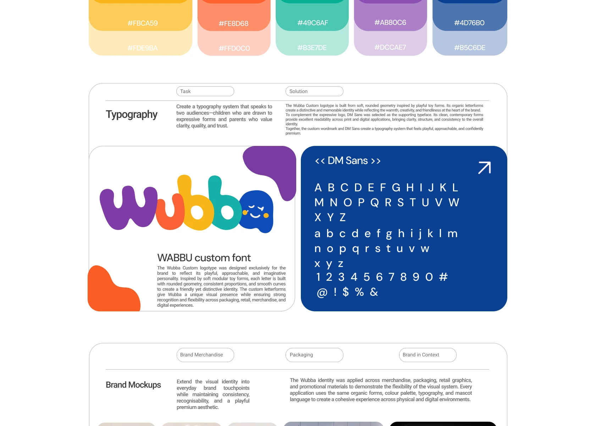
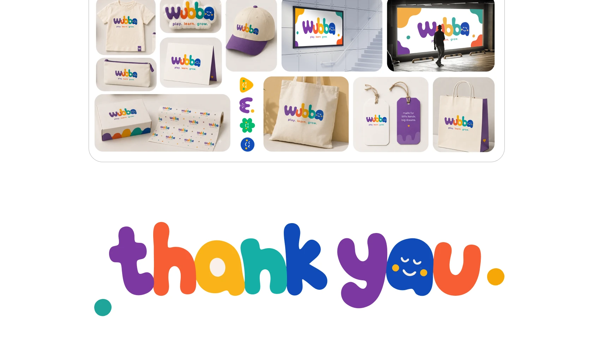

BRAND IDENTITY × TOY DESIGN
Wubba
brand identity
toys
packaging
visual system
play.
learn.
grow.
01
02
Safe toys created with heart
Cute friends for your little one
(01)
(02)
(04)
(03)
Creative service :
About the project :
About the designer :
Design process :
#Brand Strategy
Brief Analysis
Brand Strategy
Sketch Exploration
Identity System
Target Audience
Brand Personality
Graphic Language
Colour Palette
Competitor Research
Brand Positioning
Logo Concepts
Typography
Market Analysis
Design Principles
Pattern System
Packaging
Moodboard
Creative Direction
Brand Assets
Applications
Wubba is an emerging toy brand built for children aged 1–7 and the parents who choose their toys. The challenge was to create a playful identity that sparks curiosity in children while communicating trust, quality, and durability to parents.
Designed by Ilisha Dabas
Brand Strategy. Brand Identity Logo. Design Packaging. Visual System. Presentation Design
The visual identity is inspired by soft modular forms that represent imagination, movement, and learning through play. Every element from the logo to the packaging and retail experience—grows from one consistent visual language, allowing the brand to scale confidently across physical and digital touchpoints.
#Brand Identity
#Logo Design
#Visual System
#Packaging
#Typography
#Color System
#Brand Guidelines
Discover
(Research)
(Sketching)
(Moodboard)
(Identity)
(Applications)
(Strategy)
(Iterations)
(Exploration)
(Development)
(Presentation)
&
Define
Develop
Refine
Deliver
50+ hours
Branding
The Challenge
Design a toy brand that children instantly love and parents immediately trust.
Fun vs Premium
Dual Audience
Differentiation
Scalability
How can Wubba feel playful without appearing low quality?
Appeal to children while reassuring parents.
Stand apart from FunSkool and Hamleys.
Build one identity that works across retail, packaging and digital.
Large competitor comparison.
Build a playful identity using premium design principles.
Colourful
Premium
Premium + Playful
Busy
Classic
Modern
Product-first
Store-first
Identity-first
Traditional
Heritage
Contemporary
Opportunity
Audience
#
Parents
Children
WUBBA
Need Safety Durability Trust Premium Quality
Need Bright Colours Friendly Shapes Curiosity Fun
Wubba is designed where both worlds meet.
Final Logo
Logo Ideation
Logo Concept
Logo Construction
A playful identity built on trust, imagination, and simplicity.
The Wubba wordmark is inspired by soft modular forms commonly found in children's toys. Rounded geometry, bold proportions, and vibrant colours create a friendly and approachable identity while maintaining the clarity and confidence expected by parents. The result is a timeless logo that balances playfulness with premium quality.
The logo is built on a consistent rounded geometry with uniform stroke weight and smooth corner radii. Each letter follows the same visual rules to create harmony and flexibility across every application.
Color Palette
Combination
Process
Brand Expression
The palette is intentionally modular, allowing colours to be mixed freely across packaging, digital interfaces, retail environments, merchandise, and brand communications while maintaining consistency and recognition.
The colour palette was designed to balance two distinct audiences: children who respond to energy and imagination, and parents who value quality and trust. Every colour was selected to contribute to one cohesive visual language rather than functioning as an isolated accent.
Bold, playful colours capture curiosity and movement, while softer neutrals create space and clarity. This balance gives Wubba a contemporary identity that feels joyful, approachable, and confidently premium.
#FAB619
#FE612D
#03B090
#8A4FB0
#084091
#FBCA59
#FE8D68
#49C6AF
#AB80C6
#4D76B0
#FDE9BA
#FFD0C0
#B3E7DE
#DCCAE7
#B5C6DE
WABBU custom font
Solution
Task
The Wubba Custom logotype is built from soft, rounded geometry inspired by playful toy forms. Its organic letterforms create a distinctive and memorable identity while reflecting the warmth, creativity, and friendliness at the heart of the brand. To complement the expressive logo, DM Sans was selected as the supporting typeface. Its clean, contemporary forms provide excellent readability across print and digital applications, bringing clarity, structure, and consistency to the overall identity. Together, the custom wordmark and DM Sans create a typography system that feels playful, approachable, and confidently premium.
ABCDEFGHIJKLMNOPQRSTUVWXYZ
abcdefghijklmnopqrstuvwxyz
1234567890#@!$%&
Create a typography system that speaks to two audiences—children who are drawn to expressive forms and parents who value clarity, quality, and trust.
The Wubba Custom logotype was designed exclusively for the brand to reflect its playful, approachable, and imaginative personality. Inspired by soft modular toy forms, each letter is built with rounded geometry, consistent proportions, and smooth curves to create a friendly yet distinctive identity. The custom letterforms give Wubba a unique visual presence while ensuring strong recognition and flexibility across packaging, retail, merchandise, and digital experiences.
<< DM Sans >>
Brand in Context
Brand Merchandise
Brand Mockups
The Wubba identity was applied across merchandise, packaging, retail graphics, and promotional materials to demonstrate the flexibility of the visual system. Every application uses the same organic forms, colour palette, typography, and mascot language to create a cohesive experience across physical and digital environments.
Extend the visual identity into everyday brand touchpoints while maintaining consistency, recognisability, and a playful premium aesthetic.